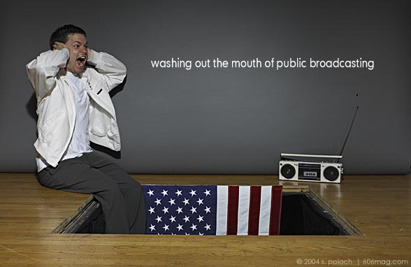

It's time to clean up American broadcasting. Decency standards are again in season; they show up every few years after a dormant period ,like cicadas. And like cicadas, they bring out the worst in everyone. At times like these, most of us follow the same range of emotion as we do when bugs start falling from the sky in droves: First you just get annoyed that you have to pick them off your windshield getting into the car every morning, you get angry when they start dive bombing into your glass of lemonade and nesting in your hair, but by the end of the summer you can't help laughing because the whole episode is starting to remind you of a clever sketch of absurdist theatre, so thick is the ridiculousness, as foreign bodies are falling from the sky at the frequency of the little winged mushrooms in the original Super Mario Brothers. There is nothing wrong with promoting decency standards, in theory, as there is nothing wrong with plagues of insects, in theory. It is when the current state of decency regulations borders the absurd that American citizens can't help but wonder if they are living within the confines of a video game or of a democratic nation. It is when a term as subjective as “obscenity” comes under public scrutiny, and government appointed officials are expected to write laws, equally subjective in nature, to define language that falls under such a label, that our country's decency neuroses start to seem more grotesque and exaggerated than obscenity itself.
Because our radio and television broadcasts have been deemed increasingly smutty, our government-appointed Federal Communications Commission has been given the task of regulating obscenity on local and national airwaves. The FCC's regulations, up until very recently were extremely clear-cut. There existed a list of seven “dirty words” that you could not say on the television or radio. As comedian George Carlin outlined in his infamous 1978 monologue , the arbitrary nature of the notion of a cussword as “dirty” can be deconstructed by breaking the words down and positing new definitions based on semantics. But there are no longer only seven words that are dirty; according to recent FCC rulings under chairman Michael Powell, there are actually an infinite number of obscene word combinations punishable by law. Due to heightened frenzy on standards of morality since Janet Jackson flashed the country at the Super Bowl and Bono said “fucking brilliant” upon receiving his award at the Golden Globes, the FCC decency guidelines have become a little cloudy.
The new system in place is a based on a series of complaints. If you hear something you think is obscene on the radio, you can file a complaint with the FCC, and the commission will evaluate the offense. Our national commission basically operates half-a-step up from a system of sanctioning grade school tattle-tales as relevant information sources. And that's exactly what the system is beginning to look like. Chicago has received national attention in the past months for the impending lawsuit between WKQX-FM 101.1 's Mancow Muller and Citizens for Community Values of Illinois' president, David Smith. Smith has used the current FCC complaint system as a vehicle to launch a personal crusade against the morning radio host, filing over 60 complaints for indecent programming. Smith takes copious notes, transcribing offensive material to include in his filed complaints. One has to wonder, however, if Mancow's show is so offensive, what is Smith doing listening to it everyday? If you're not interested in the suggestive moaning sounds of women callers on the line at 8am , maybe Mancow's Morning Madhouse isn't the program for you. Rest sound in the fact that you have good taste, but don't ask the whole country to have the same taste as you.
| next |
1) Shit, piss, fuck, cunt, cocksucker, motherfucker and tits.